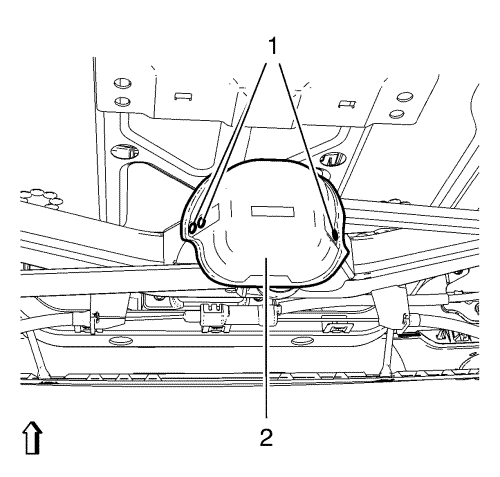
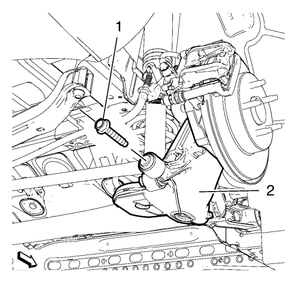
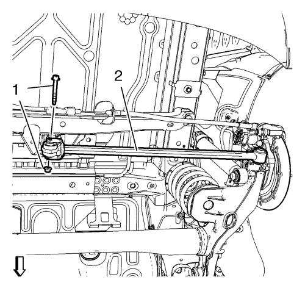
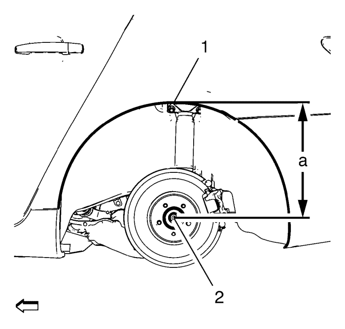

Sustitución de la varilla del balancín - Lado derecho
Herramientas especiales
EN-45059 Kit de goniómetro
Para herramientas regionales equivalentes. Consultar Herramientas especiales .
Procedimiento de desmontaje
- Elevar el vehículo y soportarlo de manera segura. Consultar Elevación y soporte en alto del vehículo .
- Desmonte los conjuntos de neumático y llanta. Consultar Desmontaje y montaje de la rueda y el neumático .

- Extraiga los 3 remaches (1) de la pantalla térmica de la varilla del balancín central (2).

- Extraiga el perno de la varilla del balancín (1) del eje trasero (2).

- Elimine y deseche la tuerca y el perno (1) de la varilla del balancín central (2).
- Desmonte la varilla del balancín del vehículo.
Procedimiento de montaje
- Introduzca la varilla del balancín en el vehículo.

Nota: Debe acatar los siguientes pasos para lograr una correcta alineación de las articulaciones del eje trasero.
- Utilizando la tabla de elevación, levante el eje a la altura de equilibrio especificada midiendo la distancia vertical (a) entre el centro del cubo de rueda (2) y la parte superior de la abertura de la rueda (1).
Especificaciones
Dimensión (a): 385 mm (15,16 pulg.)
Precaución:Consulte Precaución con las fijaciones en la sección Prólogo.
- Monte la tuerca y el perno NUEVOS (1) en la varilla del balancín central (2) y apriete a 40 N·m (30 lib. pie) + 60°, utilizando el goniómetro EN-45059.
- Monte el perno de la varilla del balancín (1) en el eje trasero (2) y apriételo a mano a 160 N·m (118 lib. pie).
- Instalar los conjuntos de rueda y neumático. Consultar Desmontaje y montaje de la rueda y el neumático .
- Deposite el vehículo sobre el suelo.
- Monte los 3 remaches (1) en la pantalla térmica de la varilla del balancín central (2).
- Bajar el vehículo.
| © Copyright Chevrolet. Reservados todos los derechos |